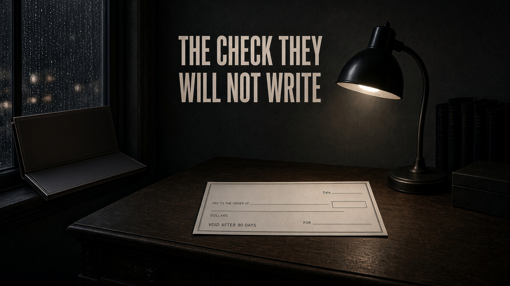

Journal · From the original edition
The check they will not write.

- The advocates’ own number is $10 trillion to $16 trillion (Darity: $10–12 trillion at Brookings, 2020; $16 trillion ‘the floor,’ 2026).
- H.R. 40 has been introduced since 1989. It does not pay anyone. It studies. Ninety-six cosponsors in 2025.
- California’s task force put up to $1.2 million per person on the table; the 2024 budget set aside $12 million for ‘reparations legislation,’ not payments.
- The Treasury takes in $5.6 trillion in fiscal 2026 and runs a $1.9 trillion deficit.
- The pattern is the product: commission, headline, no check.
Read full essay
Reparations returns every election because it is a loyalty test that never has to clear a bank. The advocates’ own number is $10–16 trillion. The Treasury does not have it. The Constitution does not permit a race-line from the IRS.
- Darity / Brookings — $10–12 trillion to close the wealth gap (2020)
- CNBC — Darity: $800,000 per eligible household; HR 40 as the vehicle
- Forbes, Juneteenth 2026 — Darity: $16 trillion is the floor
- Cato — DSA reparations line $13.5–28T on the $71–212T stack
- H.R. 40, 119th Congress — study commission, 96 cosponsors, no score
- POLITICO — California task force: up to $1.2 million per person; Newsom would not write it
- AP — California budgeted $12 million for ‘reparations legislation,’ not payments
- CBO — FY2026 receipts $5.6T, deficit $1.9T
If they meant the money, they would have named the taxpayer. They named a feeling.
Why it always returns
Because it is cheap as politics and impossible as math.
In a Democratic primary it is a loyalty test: say the word or be called a denier of history.
In a general election it is quietly dropped, because the country is not 13 percent of the electorate and does not write blank checks by race.
Washington State Democrats put ‘implementation’ into a platform in June 2026 — after Juneteenth, on a weekend, in a room of delegates.
Not the Budget Committee.
The weekend the cameras want a moral.
California proved the rest.
Gavin Newsom signed a task force, took the applause, and when the economists put $1.2 million per person on the table he would not write it.
The 2024 budget set aside $12 million for ‘reparations legislation.’ Twelve million is a press release.
The pattern is the product: commission, headline, no check.
A study cannot be opposed without the charge of opposing history.
That is why they prefer H.R. 40 to a scored bill.
A study has no Joint Committee on Taxation table.
A study cannot be defeated on arithmetic.
A study can be reintroduced forever.
The advocates’ own numbers
Why it cannot be done
A wrong in 1865 is not paid by bankrupting 2026. History is a record. It is not a blank on the Treasury.
This journal will not deny slavery, Jim Crow, or redlining.
The 13th, 14th, and 15th Amendments were the legal end of the slave power.
The Civil Rights Act and the Voting Rights Act were the legal end of Jim Crow.
A country can teach that without lighting a race line under the income tax.
What it cannot do is add a $16 trillion racial outlay on top of a $34 trillion health outlay and call the sum justice.
That is how the currency is destroyed, the courts, and the idea that the law is the same for the man in the next pew.
The Hearing’s demand is the same as it was for Medicare for All.
Name the pay-for.
Name the eligible class without a racial test that dies in court.
No pay-for, no slogan.
Let them hear us now — including the part where the check never existed.